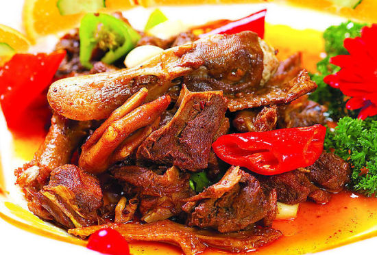

我的家乡-怀化
1.关于怀化
中文名称：怀化
面积：2.76万平方公里
人口：509.2万
别名：鹤城
所属地区：湖南省
下辖地区：鹤城区，中方县，溆浦县等
机场：芷江机场
怀化，古称五溪，湖南省辖地级市之一，自古以来就有“黔滇门户”、“全楚咽喉”之称，是中国中东部地区通往大西南的“桥头堡”。宋代以“怀柔归化”之意设怀化砦，怀化之名由此得来。
怀化位于湖南西部偏南，常住人口490.16万人（2015年）。总面积27564平方千米，是湖南省面积最大的地级市。全市辖鹤城区1个市辖区、中方县、沅陵县、辰溪县、溆浦县、会同县5个县、麻阳苗族自治县、新晃侗族自治县、芷江侗族自治县、靖州苗族侗族自治县、通道侗族自治县5个自治县，代管1个县级市洪江市和1个县级管理区洪江管理区。
怀化是“多民族文化村”，少数民族占总人口40%。长期以来，侗、苗、瑶、土家等50个民族在这里繁衍生息，创造了浓郁多彩的民俗文化。
怀化生态环境优良。地处湘中丘陵向云贵高原的过渡地带，全市森林覆盖率达到68.7%，是全国9大生态良好区域之一，被誉为一座“会呼吸的城市”。怀化是国家环保部正式命名的湖南省首个市级“国家生态示范区”。
2.怀化的美景
1.庚辰古桐寨
2.中国人民抗战胜利受降纪念馆
3怀化万佛山景区
4.洪江古商城
5.向警予纪念馆
6.滕代远纪念馆及故居
简介：
1.庚辰古桐寨:当你步人庚辰侗乡，你会惊奇地发现，这里村寨都有鼓楼、甚至有的一寨多座。庚辰全境现有各式鼓楼26座，多建于寨子中央或寨旁，它既是聚众议事的政治中心，也是休息和娱乐的场所。鼓楼自古至今都是各村寨百姓自愿投工、募款和献料修建的，鼓楼整体全系木质结构，以杉木凿榫衔接，不用一钉一铆。鼓楼是以楼冠、楼颈、楼身、楼座四大部分构成。它酷似巨杉形象，前后、左右、上下都是对称均衡和谐的统一体。在结构上，圆与方，垂线与弧线，檐方与翘角，边柱与中柱、副柱之间，穿枋纵横交错，组成各种几何图形，错综复杂，变化无穷，但没有丝毫的凌乱之感，而是错落有序，体现出多样性统一的和谐美。
2.中国人民抗战胜利受降纪念馆：中国人民抗战胜利受降纪念馆位于怀化市芷江县城东七里桥。1945年8月15日日本政府宣布无条件投降，8月21日至23日，日本降使今井武夫代表日本政府在芷江向中国政府无条件投降，中国政府在芷江举行震惊中外的中国战区受降典礼，史称“芷江受降”。为纪念“芷江受降”这一重大历史事件，1947年国民政府在芷江修建“受降纪念坊”。1995年，在纪念抗战受降50年之际，又在受降纪念坊右后侧修建一栋两层楼式的纪念馆。其建筑面积1500平方米，采用金字塔式纪念性、牌楼式民族性、屋顶式地方性造型。整个展馆设有“日寇侵华，罪行累累”、“中国抗战，浴血疆场”、“芷江受降，载入史册”、“牢记历史，珍爱和平”四个主题展览。馆内采用声光电等高科技手法陈列展出珍贵文物436件、资料照片625幅、二战时期兵器43件，被誉为“抗战胜利受降博览窗”。
3怀化万佛山景区：万佛山位于怀化市南端通道县，主要有丹霞地貌风景区94.4平方公里，保存较为完好的原始次森林和100万亩松涛森林风光，有马田鼓楼、百衣观、回龙桥等人文景观。1997年湖南省人民政府批准万佛山丹霞峰林为省级风景名胜区，2002年湖南省长沙规划设计院设计的《万佛山风景名胜区总体规划》获省人民政府批准实施。
4.洪江古商城：洪江古商城依沅、巫两水而建，成形于元末明初，至今仍遗存2000余处古建筑，面积达10万余平方米，依稀可见其古代商贸重镇的大气。洪江古商城的街道一般分为两种，平整、稍直且长的称之为“街”，沿山沟而建的叫做“冲”，冲、街之间因地势变化所形成的走道称为“巷”。街巷密集交错，石阶遍布，狭窄弯曲，除正街外长度最长的500余米，一般在200到300米，宽在2至4米，路面全是用石板铺设，是典型的古代商城建设模式。
5.向警予纪念馆：向警予同志纪念馆，位于湘西源水中游的溆浦县城，共占地面积8800平方米。纪念馆距溆浦火车站八百米，距溆浦汽车站1500米。向警予同志纪念馆(Comrade Xiang Jingyu Memorial)，是为纪念中国共产主义女战士、妇女运动的先驱向警予而建立的纪念性博物馆。位于湖南省溆浦县城。前身是向警予故居管理所。1981年7月1日开放。1985年9月4日改名向警予同志纪念馆。
6.滕代远纪念馆及故居：滕代远纪念馆于1986年11月2日建成，为一座二层现代殿堂式砖混结构仿古建筑。由铁道部、省、市、县筹资兴建，占地6300平方米，建筑面积1182平方米，陈列面积500多平方米。2004年11月2日，滕代远诞辰100周年之际，全面维修装饰，展览全面调整改版，馆容馆貌焕然一新。馆内陈列滕代远同志各个革命时期的有关图片、实物、文献、书信等近400件文物以及中央等领导同志的题词。全面展示了滕代远同志为新中国的建立和社会主义建设所奋斗的艰辛历程。通过陈列展览，教育后人。现为省爱国主义教育基地，省红色旅游13530精品线路及工程，国家级3A旅游景点。
3.怀化的美食

4.怀化的文化
1.“咚咚推”流行于湖南省新晃侗族自治县贡溪乡四路村天井寨，因演出时在“咚咚”（鼓声）、“推”（一种中间有凸出的小锣声）的锣鼓声中跳跃进行，“咚咚推”由此而得名。
3.溆浦傩戏是流传于湖南省怀化市的非物质文化遗产，溆浦地处雪峰山区，四周峰峦叠嶂，海拔在700米以上。这里有着深厚的巫傩文化根基。屈原于楚顷襄王三年（前296）流放溆浦，前后达16年。他以这里的巫觋神祠为素材，创作了《九歌》等千古传诵的诗篇。
2.辰河目连戏的主要剧目是《连传》。艺人们在长期的艺术实践中，不断地将剧目的范围扩大，将《前目连》、《梁传》、《香山》以及称为“花目连”的一系列剧目也纳入到其中，形成了庞大的剧目组合，称“四十八本目连戏”。在明清长达五百多年的历史中，演唱目连大戏，一直是辰河地区最盛大的全民文娱活动。
4.通道侗族自治县文化局为保护主体。竹子是制造芦笙的主要材料，如楠竹、紫竹、锦竹、水竹、绵竹、白竹、苦竹等，其中白竹是制作芦笙的最佳材料。制作芦笙一般都采用三年以上的老竹。